Pythagoras
Pada awal semester 2 dikelas 8, kita akan mempelajari pythagoras, dengan mempelajari pythagoras, kita dapat memahami keterkaitan antar sisi-sisi pada segitiga siku-siku. Jika kalian penasaran siapa yang menemukan teori pythagoras, kalian bisa klik disini. Teori pythagoras hanya berlaku pada segitiga siku-siku, agar tidak panjang lebar berikut adalah gambaran keterkaitan antar sisi pada segitiga siku-siku.
Istilah sisi miring, sisi tegak dan sisi lurus digunakan agar mempermudah dalam memahami rumus. Pada ummnya penamaan sisi-sisi pada segitiga tergantung pada nama titik sudut. Berikut adalah gambaran tentang penamaan segitiga.
Menentukan Jenis-jenis Segitiga
Jenis-jenis segitiga berdasarkan sudut dapat dipecahkan dengan mencermati sisi-sisi yang ada.
Jika sisi terpanjang kuadrat sama dengan hasil dari penjumlahan dari sisi tegak kuadrat dan sisi lurus kuadrat, maka dapat disimpulkan segitiga tersebut adalah segitiga siku-siku.
Jika sisi terpanjang kuadrat bukan sama dengan hasil dari penjumlahan dari sisi tegak kuadrat dan sisi lurus kuadrat, maka dapat disimpulkan segitiga tersebut bukan segitiga siku-siku. Berikut penulisan dengan bahasa matematika dengan asumsi a adalah sisi terpanjang segitiga.
\( a^{2} = b^{2} + c^{2} \) (segitiga siku-siku)
\( a^{2} > b^{2} + c^{2} \) (segitiga tumpul)
\( a^{2} < b^{2} + c^{2} \) (segitiga lancip)
Perbandingan sisi-sisi pada Segitiga Siku-siku Sudut Istimewa
Pemahaman sudut istimeewa sangatlah penting sebagai bekal, sebelum mempelajari trigonometri yang akan dipelajari pada jenjang SMA. Terdapat 2 segitiga siku-siku istimewa, yaitu segitiga siku-siku dengan sudut lainnya \( 45^\circ \) \( 45^\circ \), dan segitiga siku-siku dengan sudut lainnya \(30^\circ\) \( 60^\circ \). Untuk pemecahan masalah, kita dapat menyelesaikan dengan cara perbandingan jika dijumpai segitiga dengan sudut istimewa.
-

Jika panjang \( BC=10 cm\), \(AB=6 cm\), berapa panjang \(AC\)?
Diket:
\(BC=10cm\)
\(AB=6cm\)
Ditanya: \(AC = ...?\)
Jawab:
\(st^2=sm^2-sl^2\)
\(AC^2=BC^2-AB^2\)
\(AC^2=10^2-6^2\)
\(AC^2=100-36\)
\(AC^2=64\)
\(AC=\sqrt{64}\)
\(AC=8cm\)
Jadi jawaban yang tepat adalah B.
-
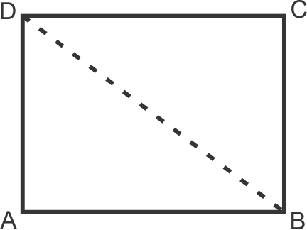Persegi panjang di atas memiliki panjang \(CD=80cm\) dan panjang \(BC=60cm\). Berapa panjang diagonal bangun tersebut?
Diket:
\(CD=80cm\)
\(BC=60cm\)
Ditanya: \(diagonal = ...?\)
Jawab: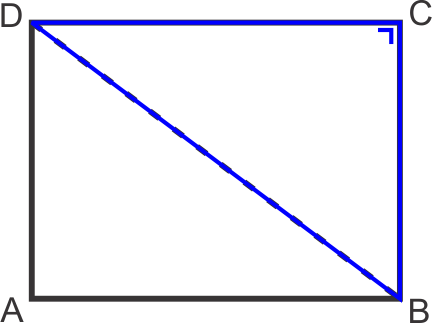diagonal bangun = \(BD\)
\(CD=sl\)
\(BC=st\)
\(BD=sm\)
\(sm^2=st^2+sl^2\)
\(BD^2=BC^2+CD^2\)
\(BD^2=60^2+80^2\)
\(BD^2=3600+6400\)
\(BD^2=10000\)
\(BD=\sqrt{10000}\)
\(BD=100cm\)
Jadi, jawaban yang tepat adalah D.
-
Panjang garis \(AB\) adalah ....
Diket:
\(A=(2,7)\)
\(B=(8,3)\)
Ditanya: \(panjang AB = ...?\)
Jawab:
\(A = (x_1, y_1)\)
\(B = (x_2, y_2)\)
sisi tegak:
\(st=\left|y_2-y_1\right|\)
\(st=\left|3-7\right|\)
\(st=\left|-4\right|\)
\(st=4\)
sisi lurus:
\(sl=\left|x_2-x_1\right|\)
\(sl=\left|8-2\right|\)
\(sl=\left|6\right|\)
\(sl=6\)
\(sm^2=st^2+sl^2\)
\(sm^2=4^2+6^2\)
\(sm^2=16+36\)
\(sm^2=52\)
\(sm=\sqrt{52}\)
\(sm=2\sqrt{13}\)
Jadi, jawaban yang tepat adalah D.
-
Luas suatu persegi panjang adalah \(120cm^2\). Jika persegi panjang tersebut memiliki lebar \(8cm\), maka garis diagonal bangun tersebut adalah....
Diket:
\(Luas =120cm^2\)
\(lebar =8cm\)
jawab:
Misalkan terdapat persegi panjang \(ABCD\)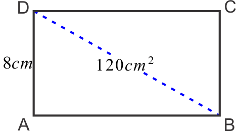\(sm^2=st^2+sl\)
\(BD^2=AD^2+AB^2\)
\(luas = AD \times AB\)
\(AB= \frac{Luas}{AD}\)
\(AB=\frac{120}{8}\)
\(AB= 15cm\)
\(BD^2=AD^2+AB^2\)
\(BD^2=8^2+15^2\)
\(BD^2=64+225\)
\(BD^2=289\)
\(BD=\sqrt{289}\)
\(BD=17cm\)Jadi, jawaban yang tepat adalah C.
-
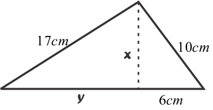Nilai \(x\) dan \(y\) secara berturut-turut adalah ....
Diket gambar sebagai berikut:
Misalkan terdapat titik \(PQRS\)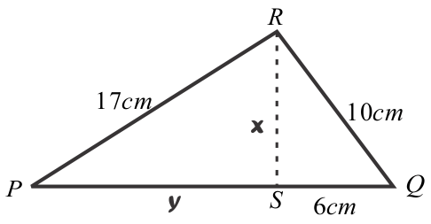Jawab:
\(st^2=sm^2-sl^2\)
\(x^2=QR^2-QS^2\)
\(sl^2=sm^2-st^2\)
\(y^2=PR^2-x^2\)
\(x^2=QR^2-QS^2\)
\(x^2=10^2-6^2\)
\(x^2=100-36\)
\(x^2=64\)
\(x=\sqrt{64}\)
\(x=8cm\)
\(y^2=PR^2-x^2\)
\(y^2=17^2-8^2\)
\(y^2=289-64\)
\(y^2=225\)
\(y=\sqrt{225}\)
\(y=15cm\)
Jadi, jawaban yang tepat adalah B.
-
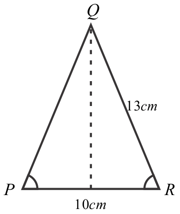\(\triangle PQR\) merupakan segitiga sama kaki, \(PQ=QR=13cm\). Jika \(PR\) merupakan alas segitiga yang memiliki panjang \(10cm\), maka tinggi segitiga tersebut adalah ....
Diket gambar sebagai berikut:
Misalkan terdapat \(\triangle PQR\) dan terdapat titik bantu \(A\)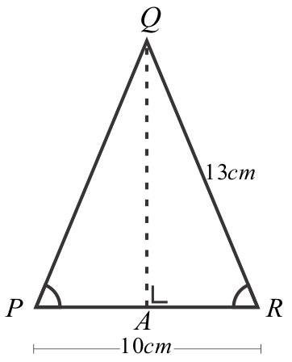Jawab:
Karena \(\triangle PQR\) merupakan segitiga siku-siku, maka \(AP=AR\). Sehingga diperoleh:
\(AP=AR= \frac{10}{2}\)
\(AP=AR= 5cm\)
\(AQ = st\)
\(st^2=sm^2-sl^2\)
\(AQ^2=QR^2-AR^2\)
\(AQ^2=13^2-5^2\)
\(AQ^2=169-25\)
\(AQ^2=144\)
\(AQ=\sqrt{144}\)
\(AQ=12cm\)
Jadi, jawaban yang tepat adalah C.
-
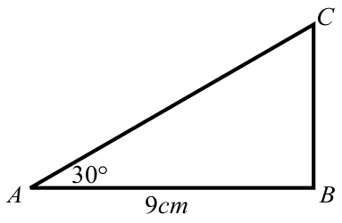Berdasarkan gambar di atas maka panjang \(BC\) adalah ....
Jawab:
\(\frac{\sqrt{3}}{AB}=\frac{1}{BC}\)
\(\frac{\sqrt{3}}{9}=\frac{1}{BC}\)
\(BC=\frac{9\times 1}{\sqrt{3}}\)
\(BC=\frac{9}{\sqrt{3}}\)
\(BC=\frac{\sqrt{81}}{\sqrt{3}}\)
\(BC=\sqrt{27}\)
\(BC=3\sqrt{3}\)
Jadi, jawaban yang tepat adalah A.
-
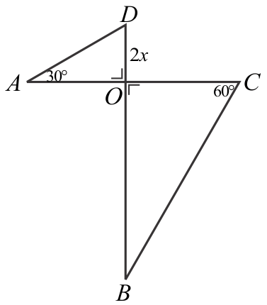Jika panjang \(CO=2\times DO\), maka panjang \(BC\) adalah ....
Diket:
\(DO = 2x\)
\(CO = 2\times DO\)
\(CO = 2\times 2x\)
\(CO = 4x\)
\(\triangle AOD\) dan \(\triangle BOC\) meiliki besar sudut-sudut yang sama, jadi 2 segitiga tersebut merupakan segitiga yang sebangun.
Jawab:
untuk membuat perbandingannya, perhatikan segitiga istimewa dengan \(\frac{1}{CO}=\frac{2}{BC}\)
\(\frac{1}{4x}=\frac{2}{BC}\)
\(BC=\frac{2\times 4x}{1}\)
\(BC=8x\)
Jadi, jawaban yang tepat adalah C.
-
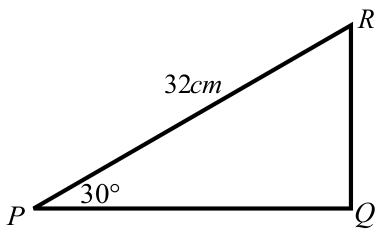Dari gambar di atas, maka panjang \(PQ\) adalah ....
Diket:
untuk membuat perbandingan segitiga \(CDE\), perhatikan segitiga istimewa dengan segitiga siku-siku sudut istimewa.
Jawab:
\(\frac {2}{PR}=\frac {\sqrt{3}}{PQ}\)
\(\frac {2}{32}=\frac {\sqrt{3}}{PQ}\)
\(PQ=\frac{32\times \sqrt{3}}{2}\)
\(PQ=16\sqrt {3}\)
Jadi, jawaban yang tepat adalah A.
-
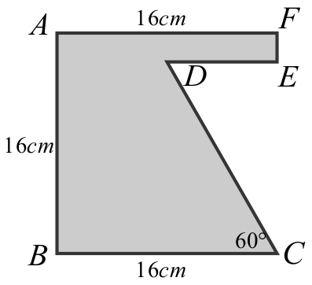Jika panjang \(DE = \frac{1}{2}\times AF\), maka luas bangun yang diarsir adalah ....
Diket:
\(DE = \frac{1}{2}\times AF\)
\(DE = \frac{1}{2}\times 16\)
\(DE = 8cm\)
Gambar sebagai berikut, misalkan diberikan garis bantu.
Jawab:
\(Luas = L.persegi - L.segitiga\)
\(Luas = (AB \times AF) - (\frac{1}{2}\times DE \times CE)\)
untuk membuat perbandingan segitiga \(CDE\), perhatikan segitiga istimewa dengan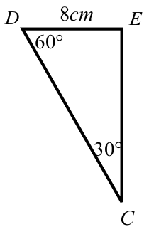\(\frac{1}{DE}=\frac{\sqrt{3}}{CE}\)
\(\frac{1}{8}=\frac{\sqrt{3}}{CE}\)
\(CE=\frac{8\times \sqrt{3}}{1}\)
\(CE=8\sqrt{3}\)
\(Luas = (AB \times AF) - (\frac{1}{2}\times DE \times CE)\)
\(Luas = (16 \times 16) - (\frac{1}{2}\times 8 \times 8\sqrt{3})\)
\(Luas = (256) - (32\sqrt{3})\)
\(Luas = (256 - 32\sqrt{3}) cm^2\)
Jadi, jawaban yang tepat adalah D.
-
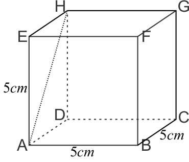Panjang \(AH\) adalah ....
Diket:
Terdapat kubus \(ABCD.EFGH\) dengan panjang sisi \(5cm\).
Apa bila sisi \(ADEH\) digambarkan menjadi seperti berikut:
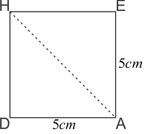Jawab:
\(sm^2=st^2+sl^2\)
\(AH^2=AD^2+AE^2\)
\(AH^2=5^2+5^2\)
\(AH^2=25+25\)
\(AH^2=50\)
\(AH=\sqrt{50}\)
\(AH=5\sqrt{2}cm\)
Jadi, jawaban yang tepat adalah B.
-
Manakah diantara pasangan berikut ini yang merupakan segitiga lancip ....
Jawab:
Syarat untuk menjadi segitiga lancip
\((sisi terpanjang)^2 < (sisi1)^2+(sisi2)^2\)
jawaban a
\(10^2 < 6^2+8^2\)
\(100 < 100\) \(\rightarrow\) (tidak memenuhi)
jawaban a
\(10^2 < 6^2+8^2\)
\(100 < 100\) \(\rightarrow\) (tidak memenuhi)
jawaban b \(20^2 < 13^2+17^2\)
\(400 < 458\) \(\rightarrow\) (jawaban memenuhi)
Jadi, jawaban yang tepat adalah B.
-
Terdapat \(\triangle PQR\), dengan siku-siku di titik \(Q\). Jika \(PQ=13cm\) dan \(QR=5cm\), maka panjang \(PR\) adalah ....
Diket:
\(\triangle PQR\) siku-siku di titik \(Q\), \(PQ=13cm\), \(QR=5cm\).
jika digambarkan seperti gambar berikut: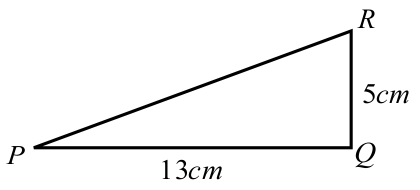Jawab:
\(sm^2=st^2+sl^2\)
\(PR^2=QR^2-PQ^2\)
\(PR^2=5^2-13^2\)
\(PR^2=25-169\)
\(PR^2=194\)
\(PR=\sqrt{194}\)
Jadi, jawaban yang tepat adalah C.
-
Luas persegi panjang yang memlili panjang diagonal \(25cm\) dan lebar \(7cm\) adalah ....
Diket:
panjang diagonal \(=25cm\)
lebar \(=7cm\)
misalkan terdapat persegipanjang \(ABCD\) dengan garis diagonal \(BD\).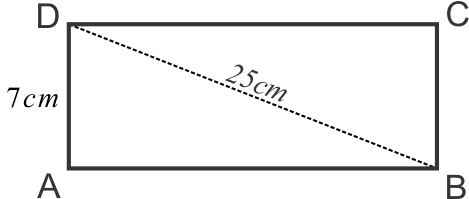Jawab:
\(sl^2=sm^2-st^2\)
\(AB^2=BD^2-AD^2\)
\(AB^2=25^2-7^2\)
\(AB^2=625-49\)
\(AB^2=576\)
\(AB=\sqrt{576}\)
\(AB=24cm\)
Jadi, jawaban yang tepat adalah D.
-
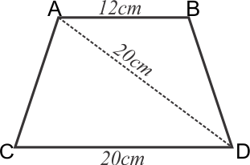Bangun \(ABCD\) merupakan bangun trapesium sama kaki, luas bangun tersebut adalah....
Diket:
Keterangan gambar sebagai berikut.
misalkan diberikan titik bantu \(P\) dan \(Q\).
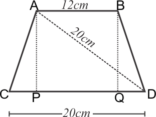Jawab:
\(Luas=\frac{(AB+CD)\times AP}{2}\)
karena \(ABCD\) trapesium sama kaki, maka \(CP=DQ\)
\(CP=DQ=\frac{20-PQ}{2}\)
\(CP=DQ=\frac{20-12}{2}\)
\(CP=DQ=4cm\)
\(DP=PQ+DQ\)
\(DP=12+4\)
\(DP=16cm\)
\(AP^2=AD^2-DP^2\)
\(AP^2=20^2-16^2\)
\(AP^2=400-256\)
\(AP^2=144\)
\(AP=\sqrt{144}\)
\(AP=12cm\)
\(Luas=\frac{(AB+CD)\times AP}{2}\)
\(Luas=\frac{(12+20)\times 12}{2}\)
\(Luas=\frac{(32)\times 12}{2}\)
\(Luas=192cm^2\)
Jadi, jawaban yang tepat adalah A.
-
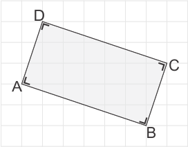Keliling bangun \(ABCD\) adalah....
Diket:
Keterangan gambar sebagai berikut.
misalkan diberikan titik bantu \(M\) dan \(N\).
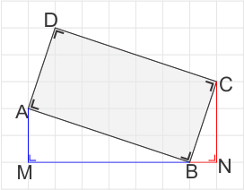Jawab:
\(AB=CD\), \(BC=AD\)
\(Keliling=AB+BC+CD+AD\)
\(sm^2=st^2+sl^2\)
\(AB^2=AM^2+BM^2\)
\(AB^2=2^2+6^2\)
\(AB^2=4+36\)
\(AB^2=40\)
\(AB=\sqrt{40}\)
\(AB=2\sqrt{10}\)
\(sm^2=st^2+sl^2\)
\(BC^2=CN^2+BN^2\)
\(BC^2=3^2+1^2\)
\(BC^2=9+1\)
\(BC^2=10\)
\(BC=\sqrt{10}\)
\(Keliling=AB+BC+CD+AD\)
\(Keliling=2\sqrt{10}+\sqrt{10}+2\sqrt{10}+\sqrt{10}\)
\(Keliling=6\sqrt{10}\)
Jadi, jawaban yang tepat adalah D.